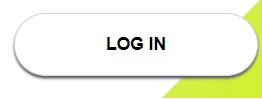
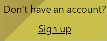

Aceasta aplicatie web este pentru cei ce vor sa vizualizeze postarile de pe mai multe retele sociale si totodata sa editeze si sa incarce poze. Astfel aplicatia actioneaza precum un central-hub de unde utilizatorul isi poate administra mult mai usor conturile de social-media, dar si ca un editor online de poze.
Scopul produsului e de a agrega informatii de pe diverse platforme pentru a fi mai usor de urmarit. Totodata aplicatia mai are scopul de a edita si a posta imagini pe retele sociale.
Principalele functii ale acestui site sunt:
In aceasta interfata userul poate sa-si introduca datele contului (email/username si parola) pentru a se autentifica cu un cont creat anterior.
Aici se regasesc doua butoane, butonul de login care realizeaza autentificarea:
Si un buton care redirectioneaza utilizatorul catre pagina de creare cont:
In aceasta interfata utilizatorul poate sa incarce poze stocate local sau sa editeze poze preluate din postarile sale de pe Reddit si Twitter.
Ulterior, utilizatorul poate sa editeze aceste poze folosind uneltele puse la dispozitie, urmand ca apoi sa le poata descarca local, sau sa le posteze catre Reddit sau Twitter folosind butonul aferent acestei actiuni.